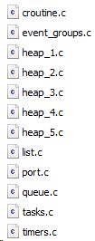
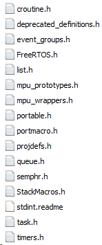
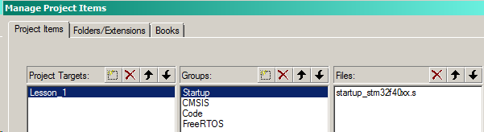
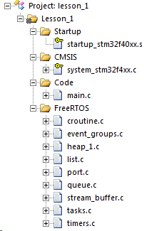

Скачиваем FreeRTOS с официального сайта: www.freertos.org
В проекте создаем одноименную папку с 2 каталогами: inc и src. В них закидываем из скачаной ОС файловое содержимое папок Source и include.
src:

inc:

По поводу файлов port.c и portmacro.h, а так же heap_x.c:
В папке portable находим нужный компилятор (Keil ссылается на папку RVDS), в ней нужный нам камень (в моем случае ARM_CM4F для STM32F407).
Из папки Source/portable/MemMang забираем исполняемый фал того способа работы с памятью, который нам нужен. В данных статьях используется heap_1.c.
В корневом каталоге ОС находим папку Demo, в ней CORTEX_M4F_STM32F407ZG-SK. Оттуда забираем FreeRTOSConfig.h и помещаем его в проектный раздел workspace/code/inc.
В кейле через менеджер подключаем папку FreeRTOS:

+

В main.c прописываем заголовочники:
#include "stm32f4xx.h"
#include "FreeRTOS.h"
#include "task.h"
#include "queue.h"
И пытаемся скомпилировать. У меян вылезли ошибки. Решилось костыльным добавлением в файл port.c объявления:
#include "stm32f4xx.h"
и функций в конце файла:
void vApplicationMallocFailedHook( void )
{
while(1){}
}
int vApplicationStackOverflowHook( TaskHandle_t xTask, char *pcTaskName )
{
( void ) pcTaskName;
( void ) xTask;
while(1){}
}
void vApplicationIdleHook( void ) { }
void vApplicationTickHook( void ) { }
После этого можно допиливать конфиг для РТОС и забивать программу задачами.
Вырезка из конфига:
#define configUSE_PREEMPTION 1
#define configUSE_IDLE_HOOK 1
#define configUSE_TICK_HOOK 0
#define configCPU_CLOCK_HZ ( SystemCoreClock )
#define configTICK_RATE_HZ ( ( TickType_t ) 1000 )
#define configMAX_PRIORITIES ( 5 )
#define configMINIMAL_STACK_SIZE ( ( unsigned short ) 32 )
#define configTOTAL_HEAP_SIZE ( ( size_t ) ( 64 * 1024 ) )
#define configMAX_TASK_NAME_LEN ( 10 )
#define configUSE_TRACE_FACILITY 0
#define configUSE_16_BIT_TICKS 0
#define configIDLE_SHOULD_YIELD 1
#define configUSE_MUTEXES 1
#define configQUEUE_REGISTRY_SIZE 0
#define configCHECK_FOR_STACK_OVERFLOW 2
#define configUSE_RECURSIVE_MUTEXES 1
#define configUSE_MALLOC_FAILED_HOOK 1
#define configUSE_APPLICATION_TASK_TAG 0
#define configUSE_COUNTING_SEMAPHORES 1
#define configGENERATE_RUN_TIME_STATS 0